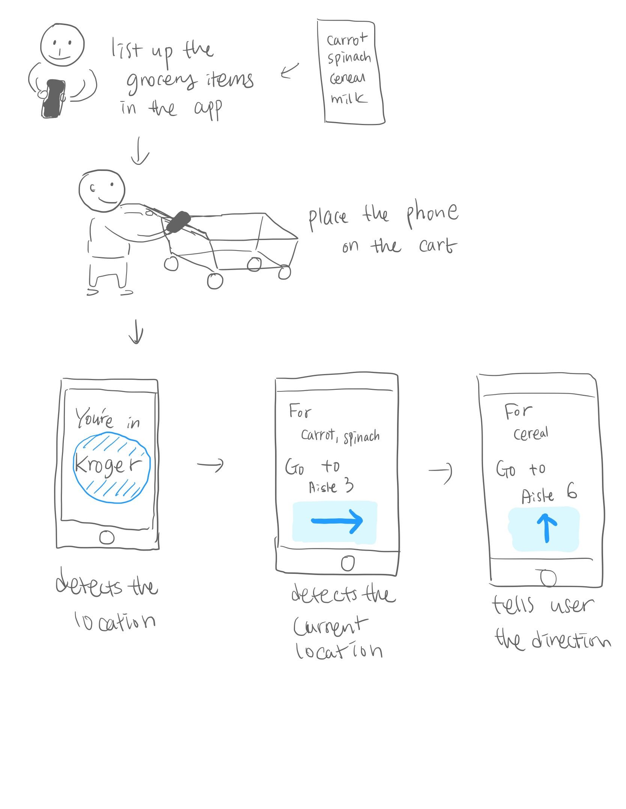
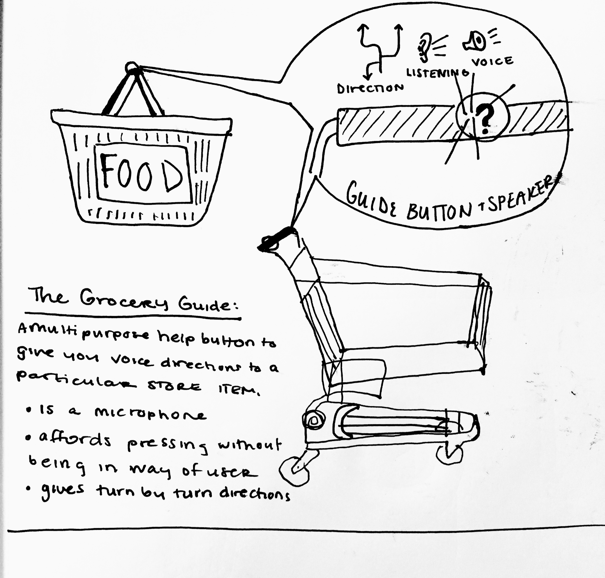
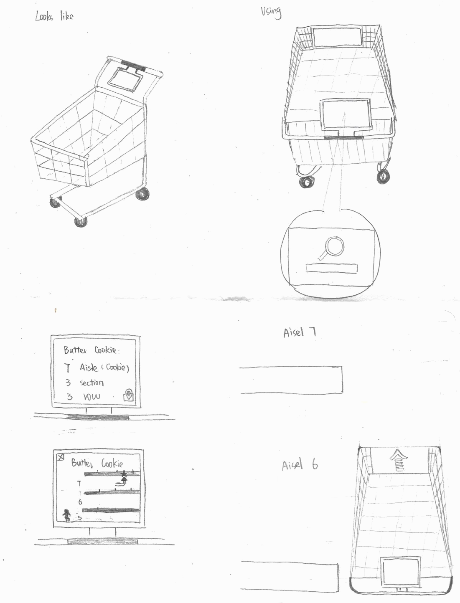

For the scope of the project, our group decided to focus on how we might use ubiquitous computing to enhance the efficiency and experience of shopping at grocery stores. We plan to make the user’s shopping experience more efficient by helping shoppers locate items and save time while in the store.
Our target audience is aimed at people who shop in-store for their households at grocery stores. This might look like many different people - single people, married couples and families alike. Their common thread is that they shop in-store versus other delivery or online options.
We believe based on our observations and feasibility that we should be focusing on augmenting the “in-store” versus both outside the store and inside the store which might make the scope too large. In doing this we can save opportunities to expand outside of the store for later consideration.
We noticed that shoppers use containers of various sizes ( baskets or carts) to place their items in a grocery store, and we focused on conceptualizing solutions to augment these containers (shopping cart, basket, etc.) to enhance shopping efficiency.
The motivation for our project is to help shoppers save time at the grocery store. Grocery shopping is also an activity that almost everyone needs to do. However, everyone doesn’t own a smartphone, and we don’t want that to be a barrier for using the device. We’ve tried focusing on concepts that don’t revolve completely around a smartphone app.
We completed four observations at different grocery stores (Kroger, Trader Joe’s, Fresh Thyme, and Walmart) to see what we could learn about a typical grocery shopper’s needs and behaviors. In particular, we paid attention to how shoppers moved around the store, and how they searched for the items they needed.
During the initial meeting, we went through all comments from the class and decided to develop the ‘Shopping cart’ idea among four different ideas. Based on our main concept, we discussed potential target groups and augmentable contexts. By doing this, we were able to narrow down the scope of the project and be clear about ‘what we will do, and whom we do it for’ as we noted in the scoping section above.
We decided that we should observe grocery stores during the busiest time of the weekend.We observed shoppers, had casual interviews with employees and even met a shopper from Instacart. The information we gathered allowed us to leave the stores with observations needed in order to develop more tangible ideas.
After we completed the observation at different stores; Kroger, Trader Joe’s, Fresh Thyme, and Walmart, we shared what we learned from our individual observations, and shared new solution ideas with sketches we drew individually.
Finally, we broadened our own perspectives about shoppers’ needs through our collective observations and were able to discuss and sketch together the following three concepts to propose as solutions.
This is an efficient navigation application that functions based on grocery list input. This would allow users to feel comfortable using their own device and enjoy the convenience of a faster, speedier checkout. The opportunities here also include collecting coupons, scanning items for faster checkout process and avoiding lines.
This is a voice activated grocery guide allowing people to press and get live responses from the guide AI. The software knows where all items in the store are located. We invision this button fitting comfortably on both the food basket handle and the grocery cart handle as we noted people used both containers when shopping.
This is a voice activated grocery guide allowing people to press and get live responses from the guide AI. The software knows where all items in the store are located. We invision this button fitting comfortably on both the food basket handle and the grocery cart handle as we noted people used both containers when shopping.
